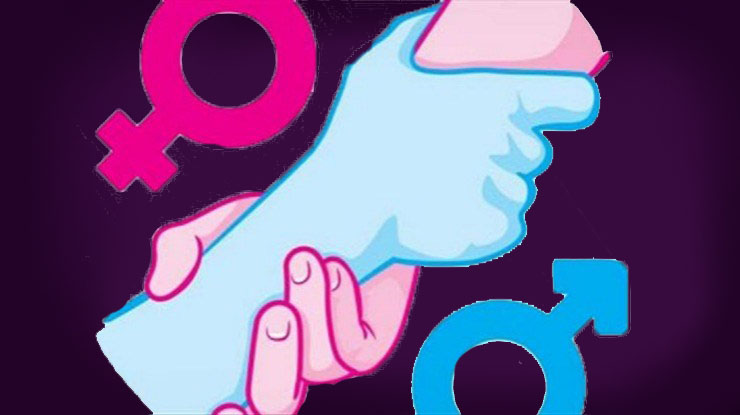
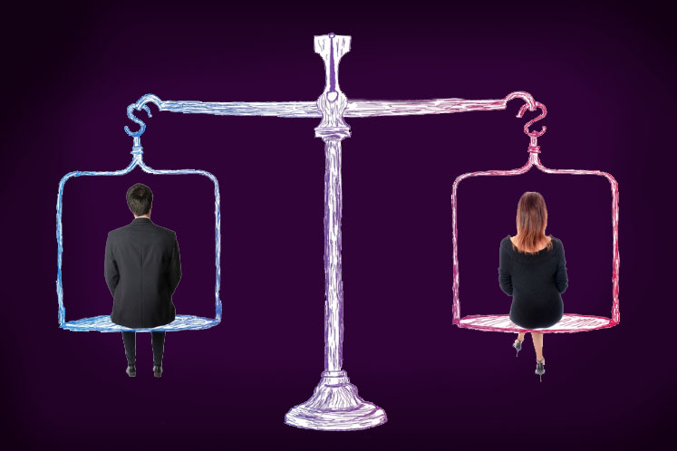
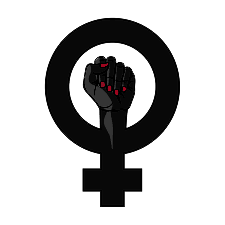

A desigualdade entre homens e muheres não é uma novidade a ser pautada entre nós. E no Brasil a situação é igual ou pior quem em outros lugares do mundo. A igualdade de gênero existe sim, porém de forma muito escassa. É um fato que as mulheres brasileiras estudam mais, ganham menos e passam mais tempo ocupadas com tarefas domésticas do que os homens. A luta pela igualdade de gênero se intensificou em meados do século XX, impulsionada, principalmente, pelo movimento feminista. Um importante ícone neste processo é a feminista francesa Simone de Beauvoir, que marcou a consolidação de uma nova etapa do Feminismo com a publicação do livro “O Segundo Sexo”, em meados da década de 1960. 
Em 2016, 21,5% das mulheres de 25 a 44 anos de idade concluíram o ensino superior contra 15,6% dos homens na mesma faixa etária, mas o rendimento delas equivalia a cerca de ¾ da renda masculina. Enquanto a média de rendimento dos homens foi de R$ 2.306, o das mulheres foi de R$ 1.764. Ou seja, em média, as mulheres recebem 76,5% do montante recebido pelos homens. Elas estudam, trabalham fora, e ainda passam cerca de 73% a mais do tempo cuidando da casa e dos filhos do que os homens. No mesmo período, também houve redução na ocupação das mulheres na indústria (-4,8%), na construção civil (-26,5%), no comércio (-1,7%) e nos serviços (-0,4%) Por esses fatos e outros mais o movimento Feminista é super importante para o desenvolvimento de nossa sociedade. Nada não diferencia as mulheres dos homens além de um orgão genital. Apoie está causa e respeite as mulheres! 
O início desse movimento feminista foi por volta do século XIX, a sua maior influência nessa época foi o movimento da Revolução Francesa e algumas modificações sociais que ocorreram nesse período. A partir das alterações que vieram por meio da Revolução Francesa as mulheres começaram a perceber com maior nitidez as opressões. A partir desse momento o questionamento dos padrões sociais e lutaras para diminuir a desigualdade política e de direitos foram ficando cada vez mais fortes. Ainda nesse período surgiu o movimento conhecido por sufragista, ele foi constituído em sua maioria por mulheres inglesas que tinham como objetivo a participação feminina nas eleições. A busca das mulheres pela igualdade dos direitos se intensificou entre os anos 60 e 90, nesse período o público feminino passou a questionar a desigualdade e os meios de submissão que as limitavam. Outros questionamentos levantados pelas mulheres nessa época foram os direitos de reprodução, a maternidade e a liberdade sexual. Percebendo que todas de certa forma já haviam sofrido com a opressão da sociedade, elas passaram a adotar a ideia da coletividade, união e força das mulheres. Nos anos 90 houve a busca total pela liberdade de escolha das mulheres sobre as suas vidas. Neste período foi percebido o quanto o cruzamento de informações e debates eram importantes para a divulgação e maior visibilidade das lutas femininas. O movimento feminista passou a entender que os comportamentos abusivos eram resultados dos padrões sociais, por isso, eles precisavam ser desconstruídos. É importante ressaltar que existem registros de muitos outros movimentos sociais e lutas lideradas pelas mulheres a fim de conquistarem a sua liberdade e direitos. 
Feminismo é o movimento que tem como objetivo a luta pela igualdade entre homens e mulheres, com relação aos direitos, tratamentos e oportunidades, além da participação feminina na sociedade. As feministas buscam acabar com a inferioridade no qual as mulheres ainda são submetidas pela sociedade. O feminismo aborda diversas questões importantes, algumas delas:
• Sexualidade;
• Direito ao aborto;
• Combate ao assédio;
• Fim da violência contra a mulher;
• Direito sobre a maternidade e à amamentação;
• Libertação dos padrões de beleza impostos as mulheres;
• Eliminação da desigualdade salarial entre gênero (homens e mulheres);
• Participação igualitária das mulheres no ambiente político do país.
Neste movimento também são discutidos assuntos ligados a grupos específicos de mulheres, como: lésbicas, prostitutas, negras, indígenas, mulheres de periferia e transexuais. Principais conquistas do feminismo Abaixo estão listadas algumas das principais conquistas obtidas pelas feministas através do seu movimento social:
• 1791 – No período da Revolução Francesa foi anunciada a Declaração dos Direitos da Mulher e da Cidadã, ela assegurava a igualdade jurídica entre gêneros;
• 1910 – Ocorreu a criação do Dia Internacional da Luta das Mulheres, essa data é recordada a cada ano no dia 8 de março;
• 1918 – Houve a publicação da lei que autorizava as mulheres inglesas a votarem;
• 1948 - Foi publicada a Convenção Interamericana sobre a Concessão dos Direitos Civis à Mulher;
• 1951 – Neste ano a Organização Internacional do Trabalho publicou a Convenção nº 100, ela estabeleceu a igualdade salarial entre homens e mulheres;
• 1953 - A Convenção sobre os Direitos Políticos da Mulher foi publicada;
• 1962 – Foram retirados os artigos pelo Código Civil que submetiam as mulheres casadas a trabalharem fora ou viajarem somente com o consentimento do marido;
• 1975 – O dia 8 de março passou a ser reconhecido pela Organização das Nações Unidas (ONU) como o Dia Internacional das Mulheres.